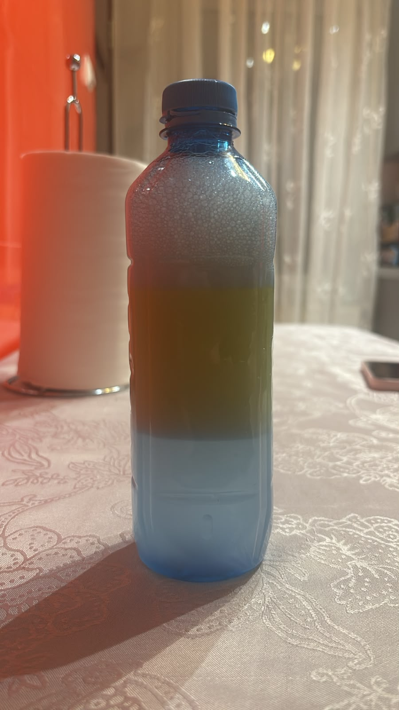
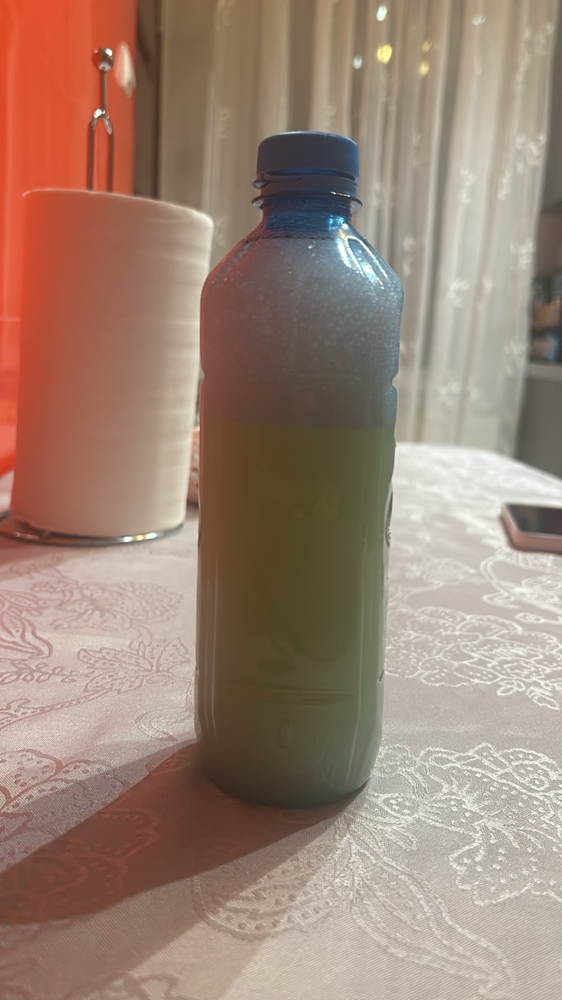

Experiment: Impactul poluării petroliere și rolul detergentului
🧪 Descrierea experimentului
Pentru a demonstra vizual cum poluanții afectează ecosistemele acvatice, am realizat un experiment simplu folosind o sticlă umplută trei sferturi cu apă, peste care am adăugat ulei și, ulterior, detergent.
Stratul de ulei: Atunci când am turnat uleiul peste apă, acesta s-a ridicat imediat la suprafață datorită densității mai mici. În mediul real, acest strat gros imită deversările de petrol și acționează ca o barieră impenetrabilă. El blochează transferul de oxigen din atmosferă în apă și oprește lumina soarelui, sufocând treptat flora și fauna acvatică.
Rolul detergentului (Emulsifierea): Când am adăugat detergentul în amestec, am declanșat un proces numit emulsifiere. Moleculele de detergent sunt tensioactive: ele au o extremitate atrasă de apă și alta atrasă de ulei. Din această cauză, detergentul rupe stratul compact de ulei în picături minuscule și le împrăștie prin toată masa de apă.

Sticla de apă cu ulei și detergent, fără să fie amestecate.

Sticla de apă cu ulei și detergent, substanțele fiind amestecate. Se poate observa emulsifierea.
🌊 Concluzia ecologică
Prin fenomenul de emulsifiere, uleiul nu mai rămâne izolat la suprafață, ci devine omniprezent în toată masa de apă. Animalele acvatice (pești, amfibieni, microorganisme) nu mai au cum să îl evite: ele înghit particulele de ulei toxice și își acoperă branhiile, ceea ce duce inevitabil la intoxicare și la distrugerea vieții acvatice.